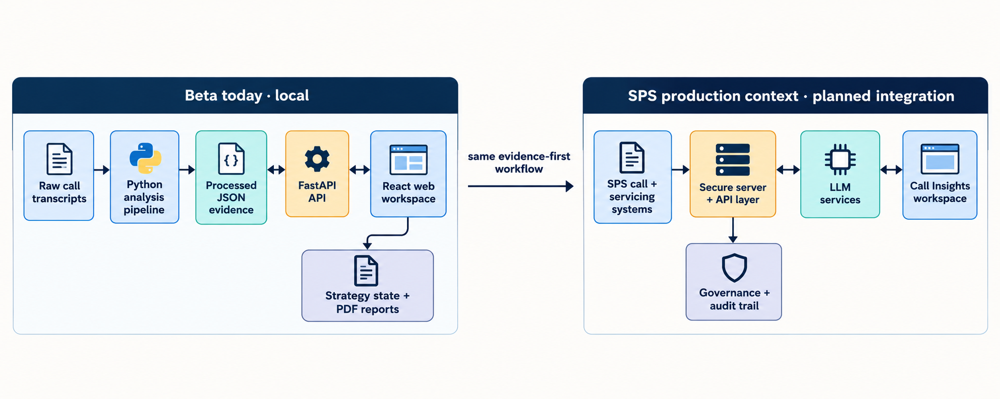

CS 4500 · Beta Release
Call Insights
An evidence-first workspace that turns mortgage-servicing call transcripts into traceable insight, storytelling, and operational action.
Beta DemonstrationLocal working productOctober 2026
01 · Project description
Help servicing leaders learn from every call—not just the calls they have time to review.
WHO
Mortgage-servicing leaders
Managers and operations teams identifying recurring customer friction and coaching opportunities.
HOW
Evidence, not guesses
Transcripts become structured issues, behaviors, outcomes, sentiment, and evidence-linked patterns.
VALUE
Insight to action
Users move from an issue to a representative call, then into a strategy or story-based intervention.
02 · Beta state
A manager can investigate a model finding end to end today.
What works now
- Start with an issue and see specific agent responses linked to observed outcomes.
- Open exact lines, supporting calls, and full transcript context.
- Expand a branching Script Route Explorer to see what customers said next.
- Turn evidence into a coaching or experiment hypothesis.
What this Beta proves
- Model output can become an evidence-first operating workflow.
- A manager can see what appears to work, what does not, and why.
- React, FastAPI, and the local analysis services operate end to end.
- SPS server and LLM services remain planned production integrations.
03 · Architecture & data flow
One evidence-first workflow—local today, SPS-ready tomorrow.

Local Beta: transcript files → Python analysis → persisted evidence → FastAPI → React workspace. Production: SPS servicing systems, secure server/API, LLM services, governance, and audit trail.
04 · Technology & code layout
The Beta connects model comparison to a usable evidence story.
Technologies
- React + TypeScript + React Flow for interactive evidence and route graphs.
- FastAPI + Pydantic for validated model and transcript contracts.
- Python + scikit-learn for comparable behavior, text, sequence, and semantic approaches.
- JSON / JSONL for traceable local evidence and strategy state.
Show these files
SolutionStoryPage.tsx — issue → response → evidence workflow.TranscriptStoryGraph.tsx — progressive branching script routes.solutions.py — benchmarked modeling approaches.conversation_paths.py — exact-line and route evidence.api.ts — frontend/API boundary.
05 · Alpha → Beta
Alpha found behavior patterns. Beta lets a manager follow the evidence and decide what to test.
| Stage | Delivered capability | Why it matters |
|---|
| Alpha | Hybrid LLM + ML approaches compared on the same calls to identify agent behaviors associated with higher resolution. | Creates a transparent, comparable modeling foundation. |
| Beta | Story → Solution: issue → specific response → observed outcome → exact supporting call. | Answers “what looks helpful, what does not, and what proves it?” |
| Beta | Behavior map, exact-line comparison, Conversation Guide, and progressive Script Route Explorer. | Makes model output explainable and drilldownable for an operations user. |
| Beta | Additional behavior, verb, sequence, TF-IDF, Naive Bayes, random forest, and semantic-retrieval approaches. | Broadens the comparison while preserving evidence and validation limits. |
06 · Beta Story → Solution
The Beta contribution is a complete path from a model signal to the words a manager can coach.
Behavior mapWhat appears to work?
Show every matching response path, observed resolution comparison, and the calls behind each signal.
Exact evidenceWhat exactly was said?
Compare the agent’s specific line with observed outcomes and open the supporting transcript.
Script route explorerWhat happened next?
Click a conversation card to reveal the next observed reply and up to three comparable branches.
The workflow is evidence-first: association becomes a traceable coaching or experiment hypothesis, not an unsupported recommendation.
07 · Individual contribution
Prachi Aswani · Story → Solution and evidence drilldown
Major Beta functionality
- Built the Story → Solution workflow from issue cluster to response, outcome, exact evidence, and testable action.
- Added an all-signal, zoomable Behavior map with response selection and supporting-call evidence.
- Built Conversation Guide and progressive Script Route Explorer: each click reveals actual next turns and comparable branches.
- Integrated exact-line comparisons, transcript navigation, model benchmarks, evidence paths, local API contracts, and experiment state.
Show during demo
apps/web/src/pages/SolutionStoryPage.tsx
apps/web/src/pages/TranscriptStoryGraph.tsx
Then show
apps/api/app/services/rank1/solutions.py
apps/api/app/services/rank1/conversation_paths.py
08 · Individual contribution
Alex Held · Story Dashboard frontend
Major functionality
- Story Dashboard 1: issue → approaches → statistics view.
- Story Dashboard 2: approach/issues matrix.
- Story Dashboard 3: approach map.
- Evidence navigation from statistics to supporting transcript context.
Show during demo
apps/web/src/pages/ResultsPage.tsx
apps/web/src/pages/ApproachMatrixPage.tsx
apps/web/src/pages/ApproachPortfolioPage.tsx
Branch evidence
Frontend-mainStoryDashboard
09 · Individual screen share
Anshul Kasera · verified contribution required
Show from Anshul’s own screen
- Open the running feature he implemented and complete one real user task.
- Show the exact component, service, endpoint, or test he owns.
- Explain the input, output, and connection to the shared workspace.
- State its current Beta status and hand off to Abdul.
Required code proof
[Verified file path]
[Verified function / component]
[Verified test or API route]
Say
“I owned ___. It receives ___ and produces ___. It connects to ___ through ___.”
Replace the bracketed items with Anshul’s verified work before presenting. Do not claim unverified ownership.
10 · Individual screen share
Abdul Rahman · strategy workflow contribution
Show from Abdul’s own screen
- Demonstrate one action-plan task from evidence selection through saved workflow state.
- Show deadline, editing, evidence-link, or drag-and-drop functionality only after verifying it works.
- Open the exact component and persistence/API function that own the change.
- Explain how a manager’s action plan remains connected to the evidence story.
Required code proof
[Verified action-plan component]
[Verified persistence/API function]
[Verified test or route]
Say
“I owned ___. It lets a manager ___. It persists through ___ and links back to ___.”
The precise file/function must be confirmed by Abdul before presenting; repository history alone is not sufficient attribution.
11 · Engineering contribution snapshot
Current main-branch code and all-repository commits.
| Team member | Commits overall | Current LOC in main | Handwritten* | AI-assisted* |
|---|
| Prachi Aswani | 71 | 11,422 | 7,995 | 3,427 |
| Alex Held | 37 | 393 | 275 | 118 |
| Anshul Kasera | 11 | 123 | 86 | 37 |
| Abdul Rahman | 20 | 1,200 | 840 | 360 |
Method: LOC is current tracked source code in main, attributed through Git blame; commit totals include all repository branches. *The handwritten/AI split is a temporary estimate and must be confirmed by each contributor before grading.
12 · Rehearsed Zoom demonstration
Every member shares their own feature, code, and connection to the working product.
Prachi · own screenStory → Solution, Behavior map, Script Route Explorer, then SolutionStoryPage.tsx and TranscriptStoryGraph.tsx.
Alex · own screenModel Approaches / Story Dashboard, then ResultsPage.tsx, matrix, and approach-map code.
Anshul + Abdul · own screensEach shows a running owned feature, its exact file/function/test, and how it connects to shared data.
0–4:30
Prachi · top-down status
Purpose, Beta state, Alpha→Beta change, and architecture.
4:30–9:00
Prachi · Beta workflow + code
Issue → response → evidence → branching route → code and model services.
9:00–11:30
Alex · Alpha model/story work
Story Dashboard views, evidence link, and owned frontend code.
11:30–15:30
Anshul + Abdul · individual handoffs
Each shares their own product feature, source code, test/API proof, and integration point.
15:30–20:00
Integration + practices + close
Prachi shows readiness; shared screen shows GitLab, build/test, Swagger, versioning, and the closing question.
13 · Software practices
We can show how the product was built—not only what it does.
GitLab workflow
- Issue boards with scoped work and estimates/spend.
- Feature branches and merge requests, including Story Dashboard work.
- Branch graph to demonstrate parallel team development.
- Release/version/tag evidence prepared for the demo.
Quality and release proof
- Automated tests for model, evidence-path, service, and API behavior.
- API routes and schemas make the frontend/backend contract explicit.
- Local startup instructions and a reproducible rich dataset.
- Final check: run tests, verify app, prepare a known-good demo path.
14 · Validation readiness
The story is built; SPS validation decides which model findings become operational guidance.
Show these Beta files
SolutionStoryPage.tsx — all-signal behavior map and exact evidence.TranscriptStoryGraph.tsx — Conversation Guide and progressive Script Route Explorer.solutions.py — comparable behavior, text, sequence, and semantic approaches.conversation_paths.py — transcript paths, exact lines, and alternatives.script_experiments.py — turning an observed signal into a measured test.
Accurate Beta statement
“Our Beta is complete as a local evidence-to-story workflow. The remaining gate is to evaluate the approaches in Anthony’s environment and select the technique that produces accurate enough findings for the existing SPS story dashboard.”
Observed resolution differences are associations in the local corpus. The product makes them inspectable and testable; it does not claim causal proof.
15 · Published API
Every local capability is inspectable through generated OpenAPI documentation.
Show in the demo
http://127.0.0.1:8000/docs — interactive Swagger UI.http://127.0.0.1:8000/redoc — readable API reference.http://127.0.0.1:8000/openapi.json — machine-readable contract.
Endpoints to demonstrate
- Workspace, issue, and call drilldown routes.
- Strategy creation and measurement routes.
- Smart Alerts and filtered Evidence Packs.
- Knowledge Graph, transparency, and simulation routes.
Call Insights · Beta
See the behavior.
Follow the story.
Alpha identified behaviors associated with faster resolution. Beta lets a manager inspect what appears to work, what does not, the exact calls behind it, and the conversation routes that follow.
We are done.Questions?